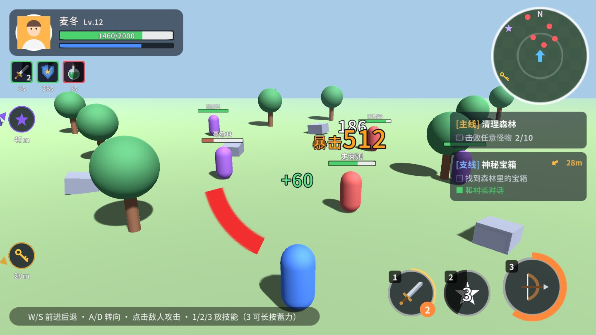
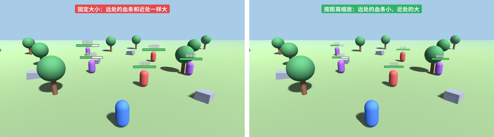
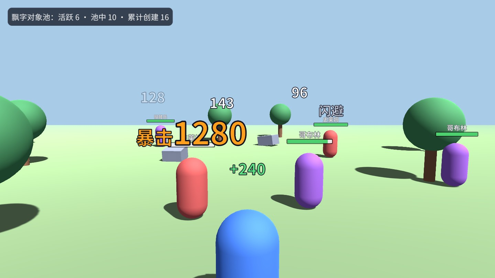
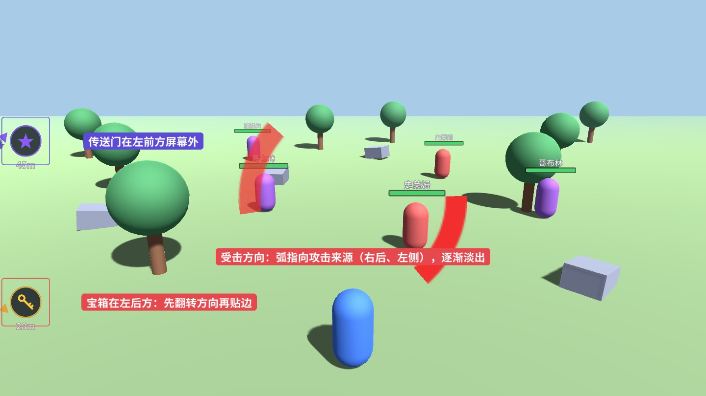
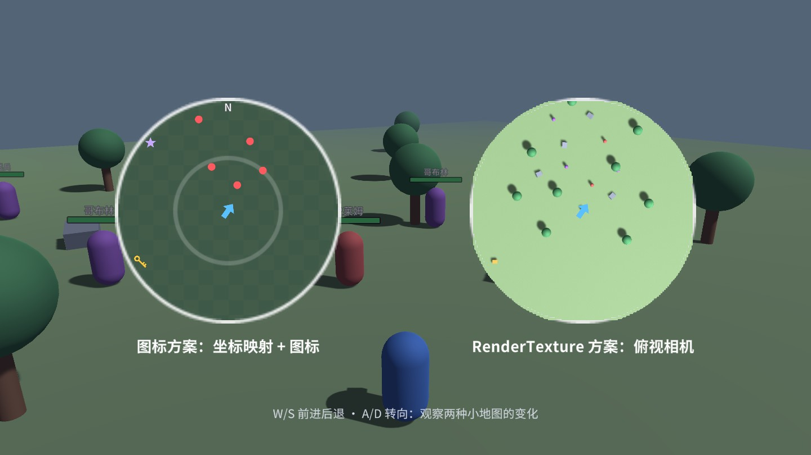
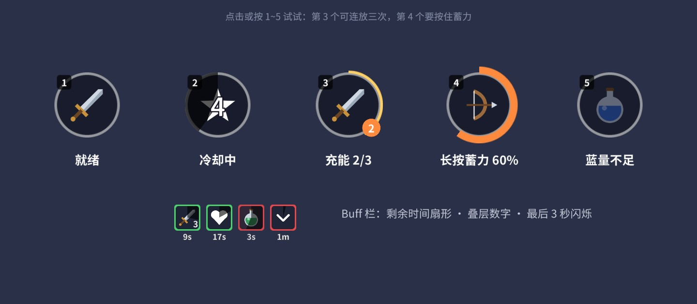
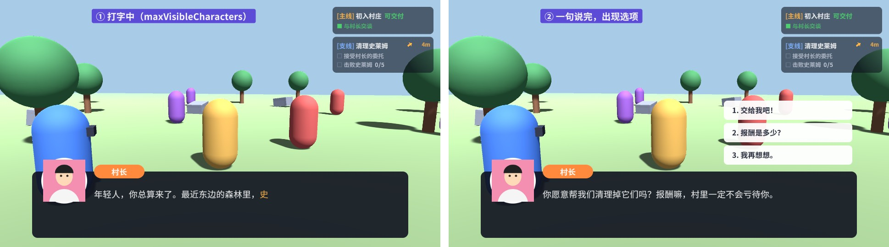

HUD（Heads-Up Display，抬头显示）是战斗中始终叠在 3D 画面上的那层界面：头顶血条、跳出来的伤害数字、指向屏幕外目标的箭头、小地图、技能按钮、Buff 图标、对话框和任务追踪。它们的共同难点是“UI 要和 3D 世界对上”，而且每帧都在变，性能稍不注意就会拖垮帧率。这一章用一个由基本几何体搭成的小战场，把这些 HUD 元素逐个做成可以复用的组件。

配套场景可以直接运行：W/S 前进后退，A/D 转向，鼠标点击敌人攻击，1/2/3 放技能（3 号可以长按蓄力），靠近敌人会挨打。场景全部由 GameObject.CreatePrimitive 生成的胶囊、立方体、球体组成，HUD 画布是普通的 Screen Space - Overlay。本章的每个组件都是独立的：示例脚本 HUDDemo 只负责把“玩法事件”转成对 HUD 组件的调用，你可以只拷走需要的那一个。
几乎所有“跟着 3D 物体走”的 HUD 都要做同一件事：已知一个世界坐标，求它在 UI 上的位置。这个换算分两步，见图 17-2。
第二步的相机参数是新手最容易填错的地方。ScreenPointToLocalPointInRectangle 需要知道“这块 UI 是用哪台相机画的”：Overlay 画布不经过任何相机，必须传 null；Screen Space - Camera 和 World Space 画布要传它的 worldCamera。如果给 Overlay 画布传了主相机，算出来的位置会整体偏掉，而且偏移量随分辨率变化，很难看出原因。HUDUtil.UICamera 根据画布模式自动选择，HUD 组件里都用它。
注意这里有两台“相机”：第一步用的是拍 3D 世界的相机（通常是主相机），第二步用的是画 UI 的相机（Overlay 时为 null）。即使用 Camera 模式的 UI 画布、而且 UI 相机就是主相机本身，这两个参数在概念上也是分开的，代码里不要混用。
对 Overlay 画布、而且跟随节点铺满画布、轴心在中心的情况，可以手算：local = screenPos / canvas.scaleFactor - canvasSize / 2。scaleFactor 来自 Canvas Scaler（第 2 章），表示“1 个画布单位等于多少屏幕像素”。手算省掉了一次射线与平面求交，但它对画布模式、节点锚点、节点是否旋转缩放都有假设，换了画布模式就会算错。ScreenPointToLocalPointInRectangle 内部是“从相机发一条射线，与矩形所在平面求交，再转到矩形的本地坐标”，对任何模式、任何嵌套都成立。几十个血条每帧调用它的开销很小，除非 Profiler 证明它是瓶颈，否则不要为了这点性能牺牲正确性。
另一个容易混淆的点是“屏幕”的尺寸。WorldToScreenPoint 用的是相机的 pixelRect：相机渲染到整个屏幕时就是 Screen.width × Screen.height，渲染到 RenderTexture 时就是贴图的尺寸，设置了视口矩形（分屏）时是那一块区域。只要第一步和第二步用的是同一套像素坐标，结果就是对的。真正出问题的通常是手写代码时把 Screen.width 和画布尺寸（画布单位）混用——例如判断“是否在屏幕内”时拿屏幕像素坐标去和画布的 rect 比较。本章的组件统一在画布单位下判断（HUDFollower 用跟随父节点的 rect，EdgeIndicator 用视口坐标），避免了这类混用。
WorldToScreenPoint 返回值的 z 分量是物体沿视线方向到相机的距离。当物体在相机背后时 z 为负，而 x、y 并不会变成屏幕外的值，反而会出现在屏幕上与真实方向“镜像”的位置——透视投影要除以深度，负深度让坐标翻了个面。结果就是：转过身去，身后那只怪的血条出现在你面前的屏幕上。所以跟随逻辑第一件事就是检查 z：
目标：每个敌人头顶一条血条和名字，跟着敌人移动；在背后或太远时隐藏；远处的小、近处的大；近处的盖住远处的。
实现分两个组件。HUDFollower 挂在每个血条的根节点上，负责“我跟谁、怎么跟”；HUDFollowRoot 挂在所有血条的父节点上，每帧统一刷新：
几个设计点：
localPosition 赋值而不是 anchoredPosition：ScreenPointToLocalPointInRectangle 返回的是“以父节点轴心为原点”的坐标，正好对应 localPosition，与血条自己的锚点设置无关。m_Margin），血条在怪物刚走出屏幕边缘时不会突然消失。为什么不让每个血条在自己的 Update 里算位置？第一是时序：Update 的执行顺序不确定，如果血条先于相机移动脚本执行，算出来的就是上一帧的相机位置，镜头一动血条就落后一帧“抖”一下。放在 LateUpdate 里，并且让相机脚本先执行（示例中 HUDDemo 标了 [DefaultExecutionOrder(-100)]），就保证了“先摆相机、再算 HUD”。第二是开销：几十个 MonoBehaviour 各自的 Update 有调用开销，集中在一个循环里，也方便以后加距离剔除、分帧更新。
// HUDDemo.cs：相机跟随脚本必须先于 HUD 刷新执行
[DefaultExecutionOrder(-100)]
public class HUDDemo : MonoBehaviour
{
void LateUpdate() => PlaceCamera();
}
按深度排序：UGUI 同一个父节点下按兄弟顺序绘制，血条重叠时谁盖住谁取决于创建顺序。SortByDepth 每帧按距离从远到近排序，并且只在顺序真的变化时才调用 SetSiblingIndex——改兄弟顺序会让整个 Canvas 重新合批，没变化就别动。

血条本身带一个“延迟白条”：前景立即掉到新的血量，后面一条浅色的停顿 0.35 秒再追上去，让玩家看清这一下打掉了多少（第 4 章介绍过同样的思路）。回血时白条直接跟上，不做延迟：
还要提醒一点：血条的数值来源。示例里怪物自己保存血量，受伤时直接调用血条的 SetHealth。真实项目中血量属于战斗数据（联网游戏里由服务器下发），HUD 应该订阅“血量变化”事件或者每帧读取数据层，而不是被战斗逻辑直接调用。这和第 16 章的数据绑定是同一个思路：数据层不引用任何界面，界面只负责把数据画出来。
目标：命中时在敌人头上跳出数字：普通伤害白色，暴击橙色放大，治疗绿色，闪避灰色；先“砸”出来再上浮淡出；一秒钟冒几十个也不卡。
飘字是 HUD 里创建销毁最频繁的东西。每次 Instantiate 一个带 TMP 的物体要分配内存、初始化组件、生成网格，Destroy 又会产生垃圾，团战时 GC 一来就是一次明显的卡顿。所以飘字必须用对象池：
池子的实现非常朴素：一个栈放空闲的，一个列表放活跃的。几个要点：启动时预热（m_Prewarm）一批，避免第一次战斗时现场创建；设置活跃上限（m_MaxActive），爆量时回收最老的那个，宁可少显示几个数字也不能让帧率崩掉；每个飘字记住的是世界坐标，每帧重新投影，所以镜头移动时数字仍然钉在命中点上。
单个飘字只负责自己的动画曲线：0～12% 的时间从 1.8 倍缩小到 1 倍（“砸”的感觉），上升用 EaseOutCubic 先快后慢，最后 30% 的时间淡出。横向漂移是随机的，连续命中时数字不会叠成一团：

图 17-5 左上角的统计显示：预热了 16 个，此刻活跃 6 个、池中 10 个，累计只创建过 16 个对象。在配套场景里连续点怪，你会发现“累计创建”在打了很久之后仍然停在一个很小的数字上。
伤害数字看似简单，可读性却直接影响战斗手感。数值膨胀的游戏里，几百万的伤害要缩写成“1.2万”“356万”，否则一串数字横跨半个屏幕；缩写规则最好集中写在一个格式化函数里，HUD、战斗日志、结算界面共用。暴击、治疗、闪避之外，还常见“格挡”“免疫”“吸收”等文字类型，它们最好用不同的颜色和字号而不只是不同的文字，玩家在激烈的战斗中靠颜色和大小判断，几乎不会去读字。多个玩家同屏时，别人造成的伤害应该更小、更淡，甚至不显示，只突出自己的输出。
飘字放在屏幕空间（本章做法）还是世界空间（每个数字一个 World Space 画布或 TextMeshPro 3D 文本），各有取舍：屏幕空间的数字大小不随距离变化，远处的怪也能看清伤害，而且所有数字在同一个 Canvas 里，可以合批；世界空间的数字有真实的透视和遮挡，但每个数字一个画布或网格，数量多时开销大。多数动作游戏选择屏幕空间。
TMP 的描边、阴影都是材质属性。如果在代码里对每个飘字设置 text.outlineWidth = 0.2f，TMP 会为这个文字复制一份材质实例（fontMaterial），于是每个飘字一份材质，彼此无法合批，几十个飘字就是几十个 Draw Call。正确做法是在项目里建一个带描边的材质预设资源（TMP 字体资源右键 Create › TextMeshPro › Material Preset，或者复制字体的默认材质再开启 Outline），所有飘字通过 fontSharedMaterial 共用它。配套工程的 Ch17/Materials/HUD_TextOutline.mat 就是这样生成的，血条名字、技能冷却数字也用它。第 5 章介绍了材质预设，第 20 章会用 Frame Debugger 看合批。
目标：任务目标在屏幕外时，在屏幕边缘显示一个指向它的箭头和距离；目标在身后也要指对方向；目标回到屏幕内时箭头消失。
思路是：以屏幕中心为原点，求出目标方向；从中心沿这个方向发一条射线，和“内缩了一圈边距的屏幕矩形”求交，交点就是箭头的位置，方向角就是箭头的旋转。
这段代码有三个细节。第一，用 WorldToViewportPoint（0～1 的视口坐标）判断是否在屏幕内，比用像素坐标少一次除法，而且和分辨率无关。第二，目标在身后（z < 0）时，按 17.1 节的分析投影是反的，所以把方向取反——这样身后左边的宝箱，箭头会出现在屏幕左下方，而不是右上方。第三，方向向量先乘上画布的宽高再求角度，否则在 16:9 的屏幕上，视口坐标的“45°”实际上并不是 45°，箭头会指歪。
指示器的结构是：根节点（只移动不旋转）→ 一个旋转的 ArrowPivot（箭头放在它的右侧 62 像素处），图标和距离文字放在根节点下保持正立。只让箭头转、不让图标文字转，是这类指示器好看的关键。

目标：右上角一个圆形小地图，显示玩家位置朝向、附近的敌人、任务目标；比较两种常见做法的效果和开销。

小地图的本质是一次坐标变换：取目标相对玩家的水平位移 (dx, dz)，乘以“每米多少像素”，世界的 X 轴对应地图的 x，世界的 Z 轴对应地图的 y。如果要“玩家永远朝上、地图跟着转”，就把所有相对位移绕原点反向旋转玩家的偏航角（yaw）：
超出地图半径的标记分两种处理：普通敌人直接隐藏；任务目标、队友这类重要标记“贴边”显示（把向量长度截到半径），玩家一眼就知道该往哪走。旋转模式下底图也要跟着转，所以底图做得比圆形视口大一圈（1.5 倍），转起来四角不会露出来。
地图底图可以是美术画的整张地图，也可以像示例一样只用网格纹理（雷达风格）。用整张地图时，需要把地图图片的像素坐标和世界坐标对齐：记下地图图片覆盖的世界范围（比如 X 从 -200 到 200 米），按比例换算即可，和图标的换算是同一个公式。
举个例子：美术给了一张 1024×1024 的地图，覆盖世界坐标 X 从 -100 到 100 米、Z 从 -100 到 100 米，那么 1 米对应 5.12 个贴图像素。小地图要显示以玩家为中心、半径 30 米的范围，就把这张底图放进圆形遮罩里，底图的尺寸设为 200 米 × 每米像素数，位置设为“玩家坐标 × 每米像素数”的相反数——玩家走，底图反向移动，玩家图标永远在中心。图标的换算用同一个“每米像素数”，两者就严丝合缝了。
另一种做法是在玩家头顶放一台正交相机向下拍，targetTexture 设为一张 RenderTexture，UI 上用 RawImage 显示这张贴图，再用圆形的 Mask 裁成圆。地图上看到的就是真实的场景，建筑、地形、移动的怪物都自动出现：
代价是多渲染一次场景。即使是简单的俯视图，CPU 也要再做一次剔除和 Draw Call 提交，GPU 要再画一遍。示例做了两个常见优化：关掉相机的自动渲染，改成每两帧手动 Render() 一次（小地图不需要 60 帧）；正式项目里还会用 Culling Mask 只渲染地形和建筑层，并在怪物头上放只有小地图相机能看到的彩色标记。
| 图标方案 | RenderTexture 方案 | |
|---|---|---|
| 开销 | 几十个图标的位置更新，很小 | 额外一次场景渲染 + 一张 RT 的显存 |
| 表现 | 风格统一、信息清晰，可自由设计 | 所见即所得，地形变化自动体现 |
| 美术工作 | 需要画地图底图或接受雷达风格 | 几乎为零，但细节多时看不清 |
| 边缘 | Mask 裁圆，图标可以贴边 | Mask 是模板测试，圆边有锯齿；可改用第 14 章的软遮罩 Shader |
图 17-8 右边圆形的锯齿边缘就是 Mask 模板裁剪的特点（第 14 章）：模板测试只有“画”和“不画”两种结果，不会产生半透明的过渡像素。手机游戏多数采用图标方案或“预先烘焙一张俯视图 + 图标”，RenderTexture 方案更多见于 PC 和主机。
目标：被攻击时，在屏幕中心周围出现一段红色弧，指向攻击来源；玩家转身时弧跟着转；一秒多后淡出。
弧形不需要专门的图片：用一张圆环精灵，Image 的 Type 设为 Filled、Fill Method 设为 Radial 360、Fill Origin 设为 Top，fillAmount = 50/360 就是一段 50° 的弧。Filled 从顶部顺时针填充，所以再把弧回转半个弧长，让弧的中点对准正上方；之后整个节点绕屏幕中心旋转到来源方向即可：
角度用 Vector3.SignedAngle 在水平面上计算“镜头前方”与“指向来源的方向”的夹角：0° 是正前方，正值在右。世界里俯视顺时针为正，而 UI 的 z 轴旋转逆时针为正，所以赋值时取负。指示器记住的是来源的世界位置而不是角度，因此玩家挨打后转身，弧会实时转到新的相对方向上，这是很多游戏里“受击指示会跟着你转”的原理。同一方向 20° 以内的多次受击合并成一个指示，只刷新时间，避免叠出一圈。
目标：一个组件覆盖三种常见机制：普通冷却（转圈遮罩 + 倒计时）、多层充能（最多存 3 次，层数没满时外圈显示下一层的进度）、长按蓄力（按住时外圈涨满，松手按蓄力比例释放）；蓝不够时图标变灰。

冷却遮罩和受击弧是同一个技巧：一张圆形精灵设为 Filled / Radial 360 / 顶部起点 / 逆时针，fillAmount 从 1 降到 0，黑色半透明扇形就会逆时针“退开”。fillAmount 的 setter 内部用 SetPropertyUtility.SetStruct 比较新旧值，值没变不会标脏，所以每帧赋值是安全的；真正有开销的是改文字——倒计时只在数字变化时才产生新字符串（BuffIcon 里演示了这个优化）。
Filled 类型的几个参数决定了遮罩怎么“转”，第 4 章介绍过，这里按 HUD 的常见用法再列一次：
Filled 的扇形是由 Image 在 OnPopulateMesh 里按角度切出的多边形（源码 Image.GenerateFilledSprite），每次 fillAmount 改变都会重建这个 Image 的网格。一个按钮的网格只有几十个顶点，重建很便宜；但如果把一个包含大量元素的面板放在冷却遮罩所在的 Canvas 里，整块 Canvas 每帧都要重新合批，这就是要把技能栏放进单独 Canvas 的原因之一。
多层充能的计时规则是：只要层数没满，就一直在充下一层；充满一层后，如果还没满，多出来的时间继续算进下一层（m_Recharge - m_Cooldown），不能直接清零，否则帧率低时会“吞掉”时间。层数为 0 时显示整块遮罩和倒计时；层数在 1 到上限之间时，按钮可用，外圈细环显示下一层的进度。
长按蓄力用到了事件系统的三个接口（第 11 章）：OnPointerDown 开始蓄力，OnPointerUp 按蓄力比例释放，OnPointerExit 视为取消——手指滑出按钮时取消施法，这是手机游戏的常见手感。键盘快捷键走同一套 Press / Release，PC 和手机共用逻辑。
Tick 换成读数据、把 SetState 作为唯一入口，就是一个纯显示的组件。示例里技能和战斗的衔接写在 HUDDemo.OnCast 中：1 号快斩打最近的敌人，2 号旋风对 10 米内所有敌人造成伤害并添加攻击 Buff，3 号蓄力射击的伤害随蓄力比例增长，蓄满必暴击。按钮只发出 Cast(skill, charge) 事件，不关心技能做了什么。
目标：增益绿框、减益红框；扇形遮罩表示已经过去的时间；可叠层的 Buff 右下角显示层数；最后 3 秒闪烁提醒。
同一个 Buff 再次获得时不新建图标，而是刷新剩余时间、层数加一（不超过上限），这是绝大多数游戏的规则。图标也用了小对象池，Buff 频繁获得、消失时不会反复创建。剩余时间文字只在整秒变化时才更新——TMP 每次 text 被赋值不同的字符串都要重新排版生成网格，每帧改文字是 HUD 里最常见的隐形开销之一。闪烁用的是 CanvasGroup 的 alpha，不会触发重建。
目标：NPC 对话逐字显示，遇到标点停顿一下；点击或空格：正在打字就立刻显示全句，已显示完就进入下一句；有选项的句子显示选项按钮，选择后跳到对应分支。

对话数据用可序列化的类表示，可以直接在 Inspector 里编辑，也可以从表格、JSON 读进来：
打字机效果的核心是 TMP 的 maxVisibleCharacters：一次性把整句文本赋给 TMP，只是限制显示前 N 个字符。和“每帧拼接子字符串”相比，它有三个好处：文本只排版一次，不会每帧重新生成网格布局；换行位置从一开始就是确定的，不会出现字打到行尾才突然跳到下一行的现象；富文本标签（如 <color>）不会因为截断出半个标签而显示乱码。注意 ShowLine 里调用了 ForceMeshUpdate()：赋值文本后要立即解析，textInfo.characterCount 才是这句话的字符数（不含富文本标签）。
标点停顿通过检查“刚刚显示出来的那个字符”实现，textInfo.characterInfo[i].character 给出第 i 个可见字符。选项按钮从隐藏的模板实例化并缓存复用；在循环里给按钮 AddListener 时要先把循环变量拷贝到局部变量（captured），否则所有按钮都会捕获同一个变量——这是第 6 章讲过的闭包陷阱，在这里又一次出现。
打字速度要考虑语言差异：中文一个字的信息量大约相当于英文的两三个字母，示例的每秒 28 个字符对中文偏快、对英文偏慢。做多语言时，速度应该随语言配置，或者改成按“每秒多少个词”来算（第 19 章的本地化表里可以加一列打字速度）。另外，玩家对打字机的耐心很有限，“点击立即显示全句”和“快进”是必须提供的功能，不要让玩家被迫等待。
目标：屏幕右侧列出当前任务，每个目标显示进度，完成的打勾划掉；有目标点的任务显示方向箭头和距离；进度变化时这一条闪一下。
任务条目的高度随目标数量变化，所以用 VerticalLayoutGroup + 文字的首选高度自动排版（第 10 章）。这是 HUD 里少数适合用自动布局的地方：任务列表很少变化，布局重建只在进度更新时发生一次。相反，每帧移动的血条、飘字绝对不要放进 LayoutGroup，否则每帧都会触发布局重建。
目标列表拼成一段富文本：完成的用绿色方块加删除线 <s>，未完成的用灰色空心方块，计数加粗。用 StringBuilder 拼接避免产生一堆临时字符串。方向箭头的角度和受击指示一样，相对镜头朝向计算；距离同样只在整数米变化时才更新文字。示例的对话场景里，选择“交给我吧！”会通过 OptionChosen 事件推进支线任务的第一个目标，你可以看到那一条闪一下、划掉。
任务追踪还有几个常见的产品需求：主线永远排在最前面；玩家可以手动“追踪/取消追踪”某个支线，被追踪的任务才显示在 HUD 上，其余只在任务界面里列出；任务完成时整条变成“可交付”并播放一个短暂的高亮，交付后从列表中移除。这些规则都属于任务系统的数据层：QuestTracker 只接收“当前要显示哪些任务”的列表，调用 Rebuild() 重新生成条目即可。追踪的任务多于三四条时，HUD 上会变得拥挤，可以只显示前几条，其余折叠成“还有 2 个任务”的一行。
HUD 叠在 3D 画面上，就要解决“这一下点击是给 UI 的还是给场景的”。示例的 HUDDemo 在处理点怪之前先调用 EventSystem.current.IsPointerOverGameObject()：鼠标或手指下面有能接收射线的 UI 元素时，就不再向场景发射线，否则点技能按钮的同时会打到按钮后面的怪。这也是为什么血条、飘字、指示器都必须关闭 Raycast Target——否则点怪物时鼠标正好在它头顶的血条上，点击就被 UI 吞掉了。触屏上 IsPointerOverGameObject 需要传入触摸的 fingerId，第 11 章有完整说明；用 Input System 包时则改为查询 UI 输入模块。
HUD 是每帧都在变的 UI，前面各案例里零散提到的性能要点汇总如下。它们大多可以用第 20 章的 Profiler 和 Frame Debugger 验证：
HUDUtil.UICamera 会自动传入画布的相机。但要注意画布的 Plane Distance：它决定了 UI 平面离相机多远，3D 物体比它更近时会挡住 UI。HUD 元素的位置不是随便摆的。图 17-1 的布局遵循了大多数动作游戏共同的约定，背后有明确的理由：
移动端还要注意以下几点。安全区：四个角上的 HUD 元素要放进第 3 章的 SafeArea 组件管理的区域里，刘海和圆角会切掉屏幕边缘的内容，边缘指示器的内缩边距（EdgeMargin）也应该根据安全区调整。触摸目标的尺寸：技能按钮在实际设备上至少要有指尖大小（各平台的设计规范一般建议不小于 7～10 毫米），参考分辨率 1920×1080 下 150～190 个画布单位在常见手机上大致满足；不要因为画面好看把按钮做得太小。可定制：很多手游提供“自定义按键布局”，把每个按钮的位置和缩放存进本地配置，这要求按钮的锚点设计成相对于最近的角，而不是相对于屏幕中心，这样不同比例的屏幕上自定义的位置才不会跑偏。左手模式：把左右两组 HUD 镜像，本质上只是把锚点的 x 从 1 换成 0、位置的 x 取反。
HUD 的缩放策略也值得单独考虑。Canvas Scaler 的 Match 设为 0.5（本书默认）时，屏幕越宽 HUD 相对越小；对于横屏游戏，很多团队会让 HUD 更偏向按高度匹配（Match 接近 1），保证不同宽高比的手机上按钮的物理大小接近。平板上屏幕大，同样的按钮会显得过大，可以根据屏幕的物理尺寸（Screen.dpi 和分辨率估算）额外乘一个缩放系数。第 19 章会系统讨论这些适配策略。
受击方向弧只是战斗反馈的一种。下面几个效果在动作游戏里也很常见，用本章已有的技巧都能做出来，留作扩展参考：
circle_soft 精灵反相，或程序生成一张中心透明、四周红色的贴图），alpha 随血量降低而升高，血量低于 25% 时再叠加一个按正弦脉动的心跳效果。改的是 alpha，不会触发网格重建，但它是全屏半透明图，会增加填充率开销（第 20 章），不需要时一定要整个隐藏而不是 alpha 设 0。这些效果共同的原则是：反馈要短、要清楚，常驻信息要克制。HUD 的元素越多，玩家越难在混乱的战斗中看到真正重要的东西。每加一个 HUD 元素之前，问一问它是不是玩家此刻必须知道的信息。